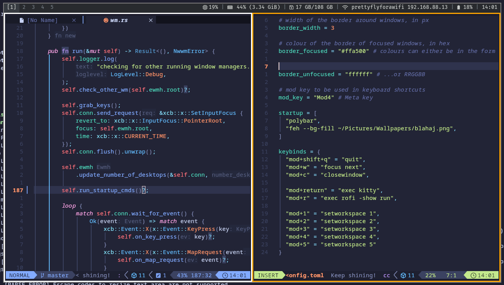

What is it? · How do I get it? · Demo · ConfiguringWhat is it?
nwwm is an experimental tiling window manager for X11 written in Rust, using XCB.
- minimal config through
~/.config/nwwm/config.toml - monocle and master/stack tiling
- support for multiple workspaces
- click-to-focus
How do I get it?
nwwm is experimental software, and as such:
- is not recommended for daily use, and
- is not available on package managers.
Prerequisites
- Linux (this project doesn't work on MacOS or Windows)
- Rust and Cargo
- If you don't have Rust, you can get it from rustup.sh
- X11
- Xephyr
- Some form of Git (Git, GitHub CLI, or some form of Git client)
Installing / testing
to use nwwm, you'll need to clone the repo, build the project, and test it in Xephyr
- Clone the repository using your method of choice:
- With Git:
git clone https://github.com/annaxiomm/nwwm - With GitHub CLI:
gh repo clone annaxiomm/nwwm - Or any other way you choose, as long as you get the code
- Enter the directory with
nwwm - Run the
./test.shscript. This will build the project and open a Xephyr window with nwwm running - Focus the Xephyr window and press ctrl+shift to give nwwm keyboard focus
- Go ham!
By default, nwwm will run kitty and polybar at startup. You will need to install these separately through your distro's package manager, or, alternately, run nwwm once, quit it, modify the config file to fit your preferences (see Configuring), and then relaunch nwwm
Demo
This project is primarily designed for Hack Club's Stardance program. I am aware that most people will not be able to, or willing to test nwwm on their own machines so here I've provided a short demo video outlining nwwm's basic features and operation.
INSERT DEMO VIDEO HERE
Configuring
nwwm is configured via a TOML config file, which is by default located at ~/.config/nwwm/config.toml or wherever your config directory is). If no configuration file is present, nwwm will attempt to create one using its defaults.
The default config file is provided below. For more in-depth configuration docs, see Documentation
# width of the border around windows, in px border_width = 2 # colour of the border of focused windows, in hex border_focused = "ff0000" # red # colour of the border of unfocused windows, in hex border_unfocused = "ffffff" # white # the mod key to be used mod_key = "Mod4" # commands that will be executed at startup startup = [ "polybar", "kitty" ] # keybinds # format: "modifiers+key" = "action parameters" keybinds = [ "mod+shift+q" = "quit", "mod+w" = "focus next", "mod+c" = "closewindow", "mod+enter" = "exec kitty", "mod+r" = "exec rofi -show run", "mod+1" = "setworkspace 1", "mod+2" = "setworkspace 2", "mod+3" = "setworkspace 3", "mod+4" = "setworkspace 4", "mod+5" = "setworkspace 5", ]